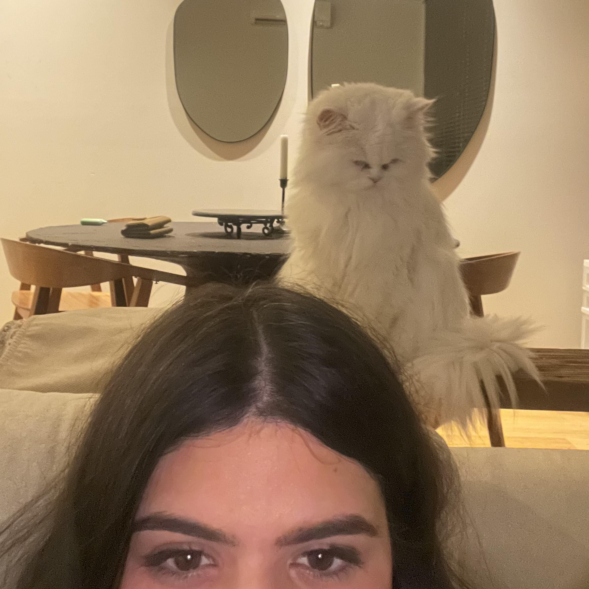

About Ginger
Ginger, a Persian cat, turned 14 this month. Ginger moved across the Atlantic Ocean to spend her remaining days with her childhood best friend - me.
Ginger and her best friend
Ginger's Characteristics
- She only likes Salmon flavor wet food
- She needs to have ice in her water
- She finishes her food only when someone sits with her
Ginger's Likes
Ginger loves Friskies Lil' Soups, Tiki Cat Stix, and Iams wet food. Click on the links below to see how they look: